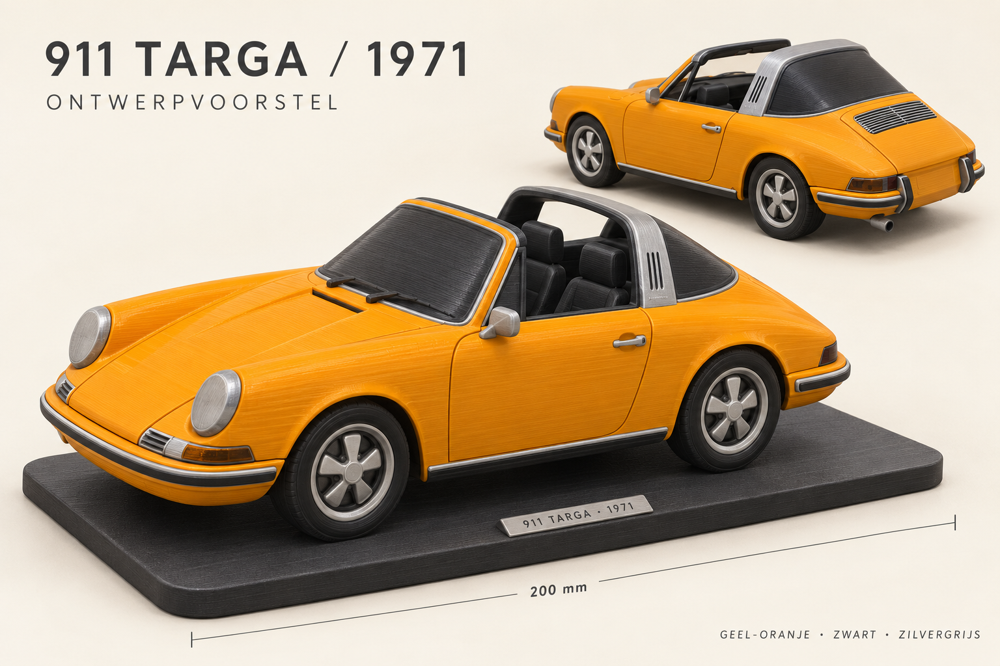
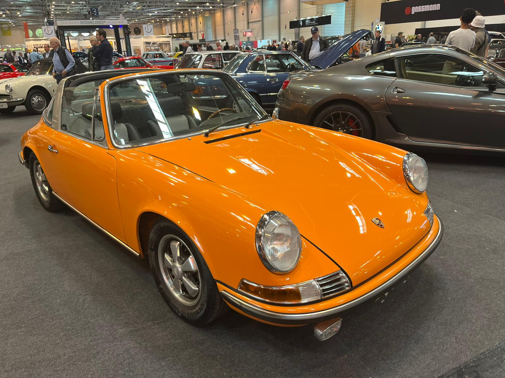

911 Targa
Marks eigen 911 Targa als uitgangspunt voor een decoratief printmodel. De lange neus, ronde spatborden en brede Targaband moeten ook op kleine schaal herkenbaar blijven.
Eerste 3D-vormstudie 1:10 · gelijkenis nog te beoordelen
3D-vormstudie
Schaal 1:10 · sleep om te draaien, scroll om te zoomen
- Lengte
- 40,1cm
- Breedte
- 16,1cm
- Hoogte
- 12,6cm
- Wielbasis
- 22,7cm
Let op: dit is een vormstudie op schaal 1:10, nog geen printbestand. De vorm is opgebouwd uit het profiel van een zijfoto van een vroege 911 Targa, geschaald op de wielbasis van 2268 mm. Daardoor wijken lengte (circa 4010 mm) en hoogte (circa 1260 mm) iets af van de gangbare opgave (4163 en 1320 mm). Breedte, dwarsdoorsneden, ruiten en details zijn nog schattingen en moeten met Marks auto worden vergeleken.
Het Targa-voorstel
Geel-oranje · zwart · zilvergrijs


De foto kon niet worden geladen. Gebruik ‘Foto groot openen’ om het bestand te bekijken.
- Bouwjaar auto
- 1971
- Richtlengte model
- ≈20cm
- Printer
- P2S+ AMS
- Kleurvoorstel
- 3kleuren
Kleurvoorstel
Een richting voor de uitvoering met AMS.
- Geel-oranjeCarrosserie
- ZwartBanden, interieur en raaminzetten
- ZilvergrijsTargaband, velgdetails en accenten
De definitieve schaal, maat en onderdeelindeling volgen bij het uitwerken van de carrosserie.
De vorm moet kloppen
Te beoordelen aan het volgende 3D-ontwerp.
Neus en silhouet
Targa en achterzijde
0 van 6 vormcriteria afgevinkt
Je vinkjes worden op dit apparaat bewaard voor je eigen beoordeling.
RC-versie
1/10 op een Tamiya M-06, wielbasis 225 mm.
De body wordt los van het chassis ontworpen en in delen geprint. De vorm moet eerst worden goedgekeurd.
Onderdelenlijst RC-versie
Vink af wat je al hebt. Zie de bestelvolgorde en winkellinks.
Chassis en aandrijving
Besturing en stroom
Body (later)
Je vinkjes worden op dit apparaat bewaard.
Projectbestanden
Referenties, keuzes en de stand van het ontwerp.
Van referentie naar model
- De carrosserie opbouwen. Een passende vroege 911-basis kiezen of betrouwbare profielen uitwerken, met de eigen foto’s als vergelijking.
- Van alle kanten beoordelen. Dezelfde geometrie bekijken van voren, opzij en in beide driekwartaanzichten.
- Geschikt maken voor het printen. Daarna de details, onderdelen, wanddiktes en printoriëntatie uitwerken voor de P2S.
Huidige fase: eerste vormstudie. De 3D-weergave bovenaan is een parametrische studie op schaal 1:10 uit de eigen foto’s. Of de vorm genoeg lijkt, moet Mark beoordelen; pas daarna volgen onderdelen en printbestanden.